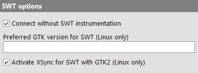

| Version 6.0.3 |
The following options are used specifically for SWT testing.
|
|  | ||
|
| Figure 37.32: SWT options | ||
With this option activated there is no need to instrument SWT based applications, except for older SWT versions on Linux. For detailed technical information please see section 43.2.
On Linux systems Eclipse/SWT applications with SWT versions 4.3 through 4.9 can be run either in GTK2 or GTK3 mode. Older version support GTK2 only, newer version GTK3. This option can be set to "2" or "3" in order to enforce a specific GTK version or left empty to use the default for the respective SWT version.
SWT with GTK2 has become unstable on newer Linux systems and can crash under heavy load which is not uncommon when driven by QF-Test at full speed. A fix for this is to turn on XSync, an option specific to X11 that causes X11 events to be synchronized. This can have a performance impact however, so if you need to run your SWT application with GTK2 and it appears to be slow, you can try to deactivate this option to see if this speeds things up without causing the SUT to crash occasionally.
| Last update: 9/6/2022 Copyright © 1999-2022 Quality First Software GmbH |